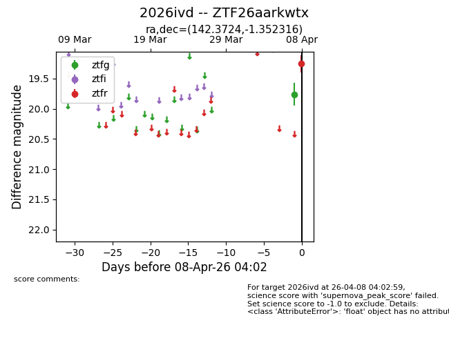
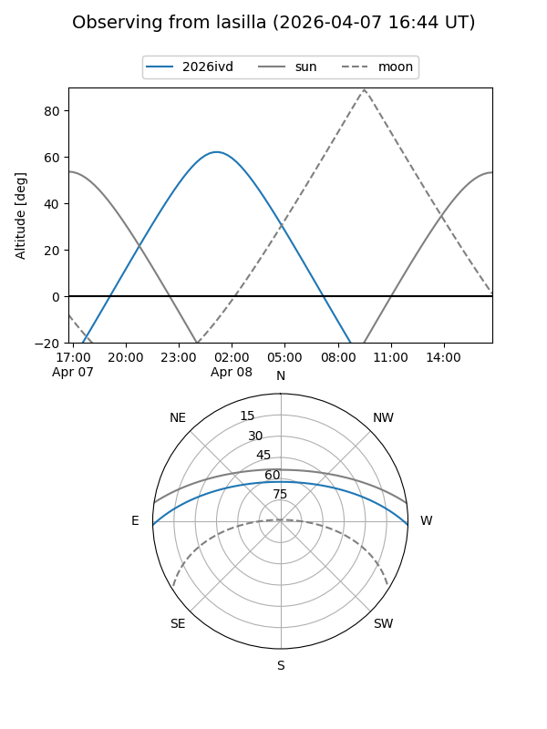
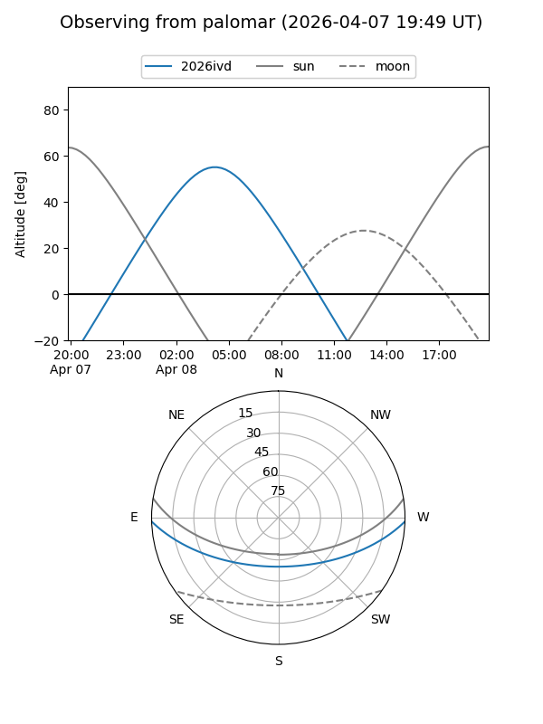
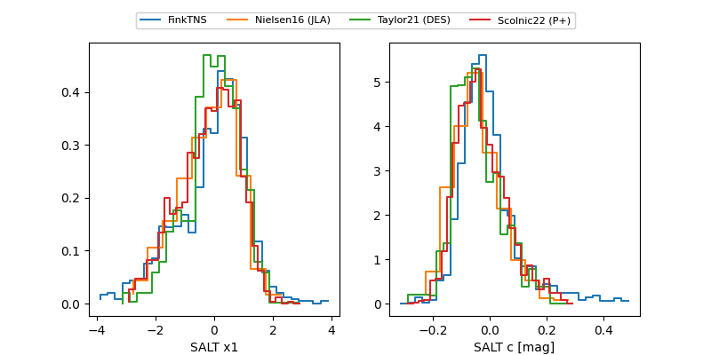

2026ivd
Target 2026ivd at 2026-04-08 04:06
Aliases and brokers:
FINK: link
Lasair: link
ALeRCE: link
TNS: link
YSE: link
alt names
ZTF26aarkwtx (ztf,fink_ztf)
2026ivd (tns,yse)
Coordinates:
equatorial (ra, dec) = 142.3724,-1.35232
equatorial (HMS+DMS) = 09:29:29.37,-01:21:08.34
galactic (l, b) = (234.8956,+33.73395)
Flags:
Photometry:
last ztfg=19.76, ztfr=19.26
1 ztfg, 1 ztfr detections
Lightcurve

Visibility


Additional plots
